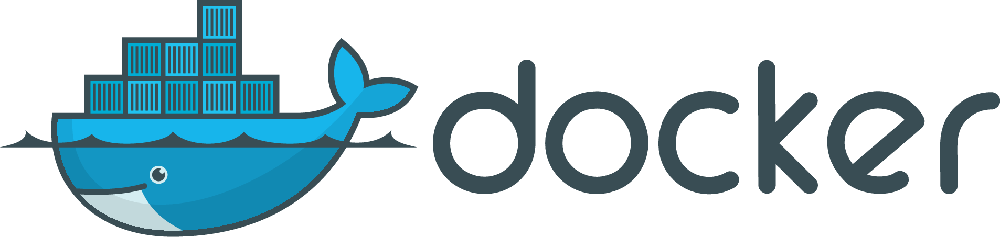

There are a wide variety of ways of installing Linux on a computer. These include:
- Creating a virtual environment
-
Allows you to install Linux within your primary OSOperating SystemOperating System. There are great many benefits to this approach as it allows you to test an experimental OSOperating SystemOperating System without affecting your primary setup. It also allows you to run simple applications without leaving your primary OSOperating SystemOperating System and can have various inter-operability options such as shared folder, and shared network settings. The disadvantages include some hit to performance as both the host and virtual OSOperating SystemOperating System have to share the same pool of resources. In addition, graphically virtual ram limits are set to .
- Creating a partition on your computer
-
and install it alongside your primary OSOperating SystemOperating System. This option is generally done by most people who know what they are doing as they generally have one or two software where there is no alternative on Linux and therefore would like to keep their primary OSOperating SystemOperating System for those specific software.
- Using a container
-
One of the more popular option in recent times. The way it works is similar to that of using a virtual machine but heavily stripped one. Basically a container houses enough components to house an application. Think of running Linux per application instead of a full blown os.
There are many merits and demerits to using an option and in this lecture we will focus on building a container image for both Linux programming and ROSRobot Operating System 2Robot Operating System 2 application

Docker is an open-source platform that has completely changed the way we develop, deploy, and use apps. The application development lifecycle is a dynamic process, and developers are always looking for ways to make it more efficient. Docker enables developers to package their work and all of its dependencies into standardised units called containers by utilizing containerisation technology.
By separating apps from the underlying infrastructure, these lightweight containers provide reliable performance and functionality in a variety of environments. Because of this, Docker is a game-changer for developers because it frees them up to concentrate on creating amazing software rather than handling difficult infrastructure.
Regardless of your level of experience, Docker provides an extensive feature set and a strong toolset that can greatly enhance your development process. In this tutorial, we will provide you with a thorough understanding of Docker, going over its main features, advantages, and ways to use it to develop, launch, and distribute apps more quickly and easily.
The biggest difference is the underlying architecture each is built on. Docker heavily relies on a daemon,
while Podman is daemonless. Think of a daemon as a process that runs in the background on the host
OSOperating SystemOperating System. In Docker’s case, its daemon is responsible for managing
Docker objects [154]
such as images and containers and communicating with other systems. To run its
daemon, Docker uses a package called dockerd . Daemons typically require root-level access to the machine
they run on. This lends itself to security vulnerabilities. If a bad actor can get access to a daemon,
they now have access to the entire machine.
Podman’s daemonless architecture comes with a few benefits. Since running daemons almost always requires root privileges, a daemonless architecture can be thought of as “rootless.” This means that users who don’t have system-level access to the machine their containers are running on can still use Podman which isn’t always the case with Docker. Instead of a daemon, Podman uses a Linux package known as systemd. Since systemd is native to the Linux operating system, Podman is often considered more “light-weight” than Docker and will usually see faster container spin-up times than when using Docker.
A Dockerfile is a text document in which you can lay down all the instructions you want for an image to be created.
-
The first entry in the file specifies the base image, which is a pre-made image containing all the dependencies you need for your application.
-
Then, there are commands you can send to the Dockerfile to install additional software, copy files, or run scripts.
The result is a Docker image:
Dockerfiles are an easy way to create and deploy applications. They help in creating an environment consistently reproducibly, and in an easier way.
A Dockerfile is used to create new custom images prepared individually according to specific needs. For instance, a Docker image can have a particular version of a web server or, for example, a database server, or in this case run an entire Linux OSOperating SystemOperating System with ROSRobot Operating System 2Robot Operating System 2 installed. For the preparation of the lecture the following Dockerfile is written which you can see in snippets below, which is a great way to start explaining how the document works:
dockerfile
Here we are declaring a base image. A base image is a bare-bones OSOperating SystemOperating System and/or application in which we build our software on. In this case it is an Ubuntu jammy jellyfish (22.04).
dockerfile
We define an ARG which is a variable. We set a TARGETPLATFORM which we can use to change the architecture of the install.
LABEL is used to give a meta-data information which in this case is a simple email information of the current
maintainer.
dockerfile
Next we configure the shell of the container to use bash and process the given input as a string and
NOT as a command.
dockerfile
We now start with building the OSOperating SystemOperating System. We start with declaring an update of the OSOperating SystemOperating System and ask it to do it non-interactively. Once it updates the system, we ask it to remove the repo-list to save up on space.
dockerfile
To make our programming easier and creating a more friendly environment, we shall install a GUIGraphical User InterfaceGraphical User Interface. There are a wide variety of desktop environments for use in Linux, such as GNOME, KDE, Xcfe but for our application we shall use mate which is the default environment for Linux Mint.
dockerfile
We start now with installing software on top of the OSOperating SystemOperating System. Remember, we are installing a bare bones system which means it is stripped from all the software suites we take for granted.
dockerfile
This section is all about installing a VNCVirtual Network ComputingVirtual Network Computing which is a graphical desktop-sharing system which allows remote controlling of another computer. It transmits the keyboard and mouse input from one computer to another, relaying the graphical-screen updates, over a network. We also do some text manipulation to fix some glitches.
dockerfile
To aid in easy navigation and searching information, we shall also install Firefox into this docker container as well.
dockerfile
To allow us to do easy programming, we shall install VSCodium, an open-source implementation of VSCode.
dockerfile
Now that everything is installed, we start the installation of ROSRobot Operating System 2Robot
Operating System 2 and its dependencies. Here we define ENV variable which allows us set which version of
ROSRobot Operating System 2Robot Operating System 2 to install.
dockerfile
Finally, we download some additional files from a repo which will be a folder containing tutorial files for
use in learning Linux. We then unzip it to Desktop and remove the image. To finish of we define a user
called ubuntu with a password of ubuntu .
As mentioned, a Dockerfile is a text document which includes all the different steps and instructions on how to build a Docker image. In a general sense, the main elements described in the Dockerfile are:
-
the base image,
-
required dependencies, and
-
commands to execute application deployment within a container.
Let’s have a look in detail as to what is going on under-the-hood. Here we will have a look at command used in the file. For a more detailed explanation of what is going on, please have a look at the file.
-
FROM -
This instruction sets the base image on which the new image is going to be built upon. It is usually the first instruction in a Dockerfile.
In this case we are downloading the official
ubuntu:jammy-20250404version from the docker repository. -
ARG -
These define variables used during the building of the image.
Here, we define a variable called
TARGETPLATFORMto control the architecture installed on the OSOperating SystemOperating System -
LABEL -
Allows writing meta-data information to the docker image. This could be the maintainer of the code or the version as an example.
-
RUN -
This will be an instruction that will be executed for running the commands inside the container while building. It is typically used to install an application, update libraries, or do general setup.
-
COPY -
Allows us to copy a file from the host to the image. In this case we are copying a special file called
entrypoint.shwhich sets up the container with various configurations. -
ENV -
Sets up environmental parameters inside the image.
To build this image we need to use the CLICommand-Line InterfaceA software mechanism you use to
interact with your operating system using your keyboard, move to the directory where both Dockerfile and entrypoint.sh is
present and run the following code to build image.
bash
Now we built the image, we now need to create a container. The following command will create a new container from an image.
This command will create a container every time it is invoked.
bash
Let’s have a look at all the options given here and understand whats going on:
-
docker run -
Our main command. It runs a command in a new container, pulling the image if needed and starting the container. Of course, in our file it is already written so when this is executed, there won’t be any additional downloads needed.
-
--volume -
Binds volume between the host and the computer. Here we introduce a path from our host computer
\T1\textasciitilde /Documents/docker-documentsand link it to the docker containerroot/home/ubuntu/Desktop/Hostto allow us to share files between host and docker container.WarningThe left side of the path may need to be adjusted for your computer.
-
--publish -
Publish a container’s port(s) to the host. Here we are allowing access of the port 6080 (TCP) to the host computer which is used by noVNC.
-
--name -
Adds a specific name to a container. If this option is not set a random will be given.
-
--security-opt -
Additional security options. Here we are passing no additional security options. This is done due to the requirements by noVNC.
-
--shm-size -
the amount of shared memory allotted to a docker container. A temporary file storage filesystem using RAMRandom Access Memorya form of electronic computer memory that can be read and changed in any order, typically used to store working data and machine code. for storing files.
Once the container is created, please use the following to close it properly.
bashdocker container stop "ros2linux"
To re-run the container and continue where left off, use the following.
bashdocker container start "ros2linux"
-
¶
- RAMRandom Access Memory
a form of electronic computer memory that can be read and changed in any order, typically used to store working data and machine code.
-
¶
- CLICommand-Line Interface
A software mechanism you use to interact with your operating system using your keyboard
-
¶
- VNCVirtual Network Computing
Virtual Network Computing
-
¶
- GUIGraphical User Interface
Graphical User Interface
-
¶
- ROSRobot Operating System 2
Robot Operating System 2
-
¶
- OSOperating System
Operating System
- [154].
- such as images and containers